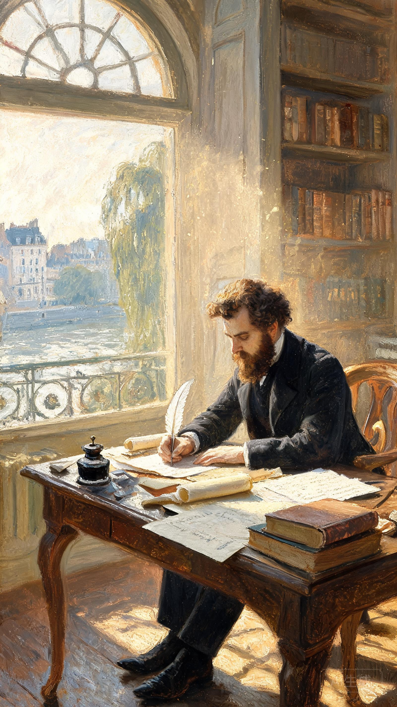
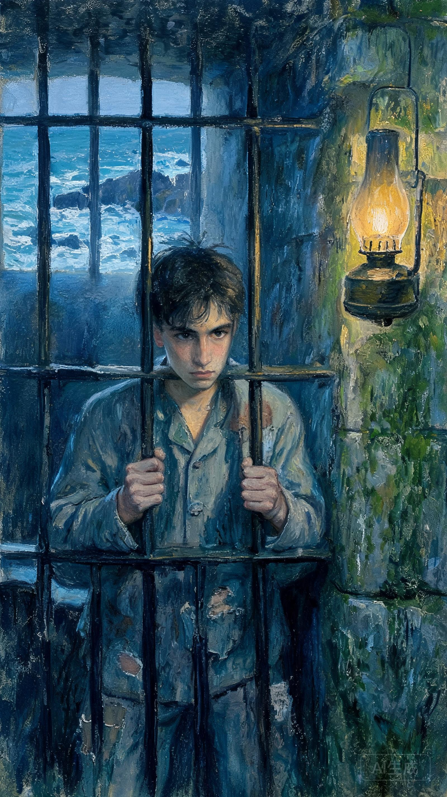
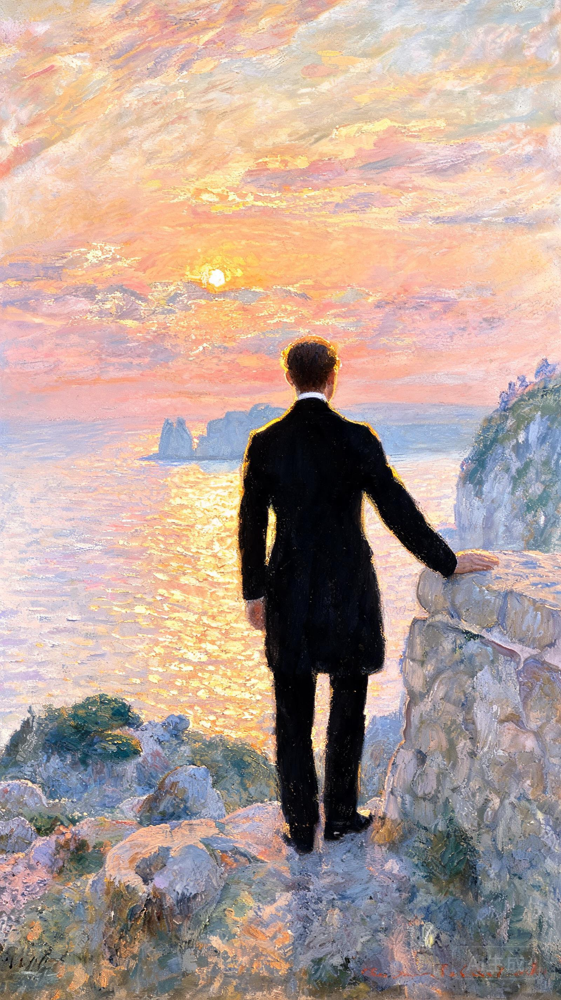
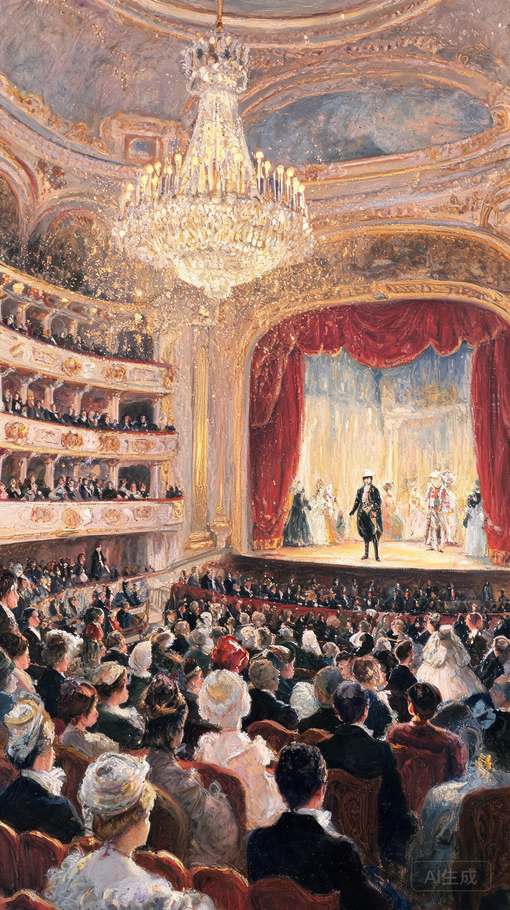

被陷害的水手，用十四年牢狱之苦换来一场惊天复仇
世界文学史上最伟大的复仇故事，人性与命运的终极较量
亚历山大·仲马（Alexandre Dumas，1802—1870），法国19世纪浪漫主义文学代表作家，人称"大仲马"。他出生于法国北部一个混血家庭，父亲是拿破仑麾下的黑人将军。大仲马一生创作颇丰，以情节跌宕、结构精巧的历史小说闻名，代表作包括《三个火枪手》《基督山伯爵》等，被誉为"通俗小说之王"。


年轻水手爱德蒙·唐泰斯在订婚宴上遭人陷害，被秘密关进伊夫堡监狱长达十四年。在狱中，他结识了法利亚长老，获知了基督山岛宝藏的秘密。越狱后，唐泰斯找到宝藏，化名"基督山伯爵"重返巴黎，凭借智慧与财富，对三个仇人展开了精密而冷酷的复仇，最终完成了一场惊心动魄的因果清算。
《基督山伯爵》探讨了正义与复仇、宽恕与救赎的永恒命题。小说通过唐泰斯从无辜受害者到复仇化身的转变，追问了一个核心问题：当人间正义缺席时，个人是否有权代行审判？它告诉读者，仇恨使人困于牢笼，唯有放下与宽恕，才能获得真正的自由。


作为世界文学史上最畅销的小说之一，《基督山伯爵》被翻译成百余种语言，改编成无数电影、戏剧和电视剧。其"快意恩仇"的叙事模式深刻影响了后世通俗文学和影视创作，"基督山"已成为"隐忍复仇、华丽归来"的文化符号，至今仍在全球范围内拥有广泛读者。